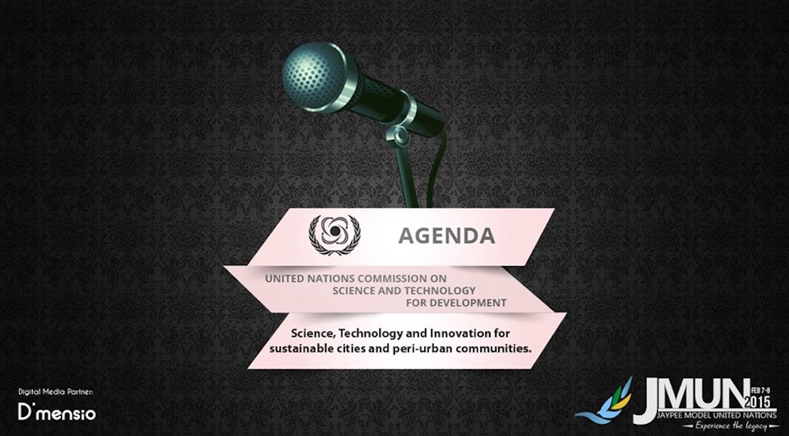

United Nations Commission on Science and Technology for Development

UNCSTD
The United Nations Commission on Science and Technology for Development (UNCSTD) is a subsidiary body of the Economic and Social Council (ECOSOC) and was established to provide to the General Assembly and ECOSOC with high-level advice on relevant issues through analysis and appropriate policy recommendations or options. This is done in order to enable those organs to guide the future work of the United Nations, develop common policies and agree on appropriate actions.
The commission met for the first time in April 1993 in New York, USA. Since July 1993, the United Nations Conference on Trade and Development Secretariat has been responsible for the substantive servicing of the Commission. The Commission has subsequently met in Geneva, Switzerland, at the Palais des Nations.
This simulation of CSTD at JMUN’15 focuses on the call by Prime Minister Narendra Modi on the development of smart cities and the role of technology in peri-urban communities.